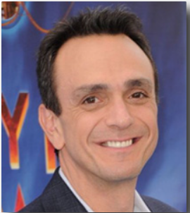

Moe is the proprietor and bartender of Moe's Tavern, a Springfield bar frequented by Homer Simpson, Barney Gumble, Lenny Leonard, Carl Carlson, Sam, Larry, and others. Grouchy, lonely, miserable, and prone to violent outbursts, Moe is constantly down on his luck and has attempted suicide numerous times.
English Voice Actor: Hank Azaria
